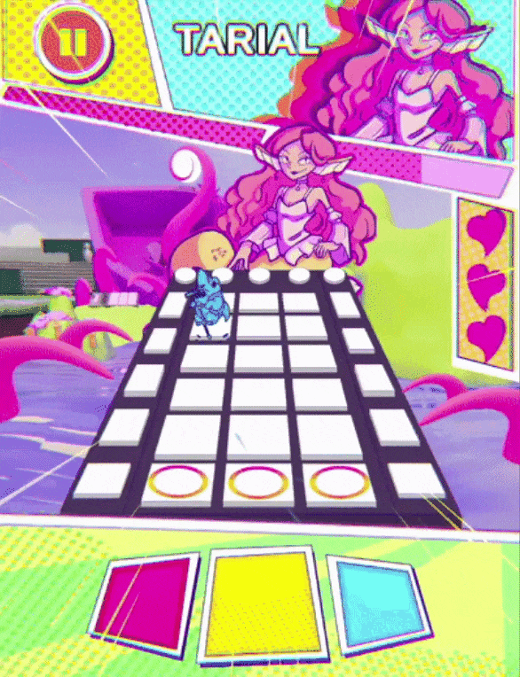

MAGICAL MUSIC ARENA

Concept
Jeu de rythme boss-rush mobile en portrait en 2D dans un style hyperpop et pop-art dynamique où on peut :
- Parer des attaques en rythme.
- Découvrir des personnages attachants.
- Débloquer différentes histoires.
- Découvrir une narration avec une seconde lecture sur des sujets sociétaux.
Pourquoi ?
Ce projet a été produit dans un contexte scolaire, comme projet de fin de deuxième année. Nous n'avions qu'une seule direction : faire un jeu avec comme objectif de le présenter à Devolver, comme projet original.
Mon travail
- Programmation et intégration de toute l'UI du jeu.
- Code du système d'attaque, de tous les types d'ennemis, du système de narration, et des déplacements/feintes d'ennemis en rapport avec le rythme de la musique actuelle.
- Grande partie des feedbacks visuels (sur l'UI comme sur les ennemis) avec VFX Graph, Particle System, et Shader Graph.
- Mise en place d'une documentation liée à un outil simple permettant de créer le Level Design des différents niveaux du jeu.
- Création d'un outil d'halftones custom fonctionnel avec de l'UI, de la 2D, et de la 3D en Shader Graph.
Comment ?
...